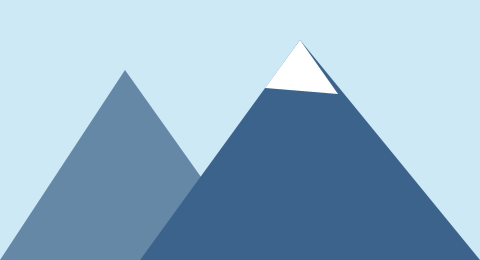
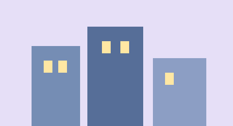
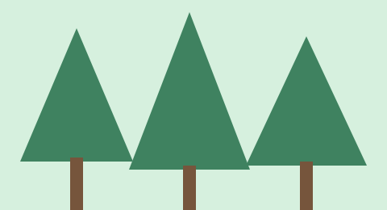
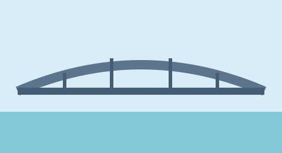
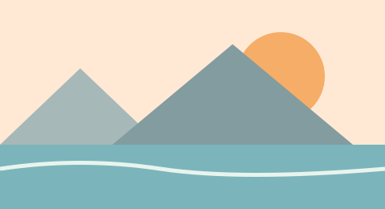
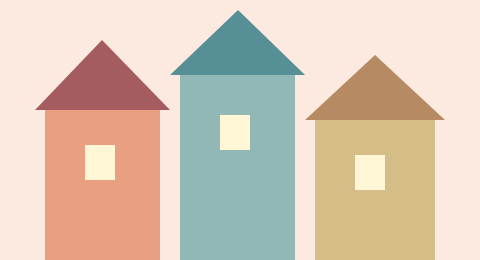

Mitt galleri
Seks illustrasjoner fordelt på Natur og By. Bruk knappene for å filtrere.






Viser 6 bilder.
Seks illustrasjoner fordelt på Natur og By. Bruk knappene for å filtrere.






Viser 6 bilder.